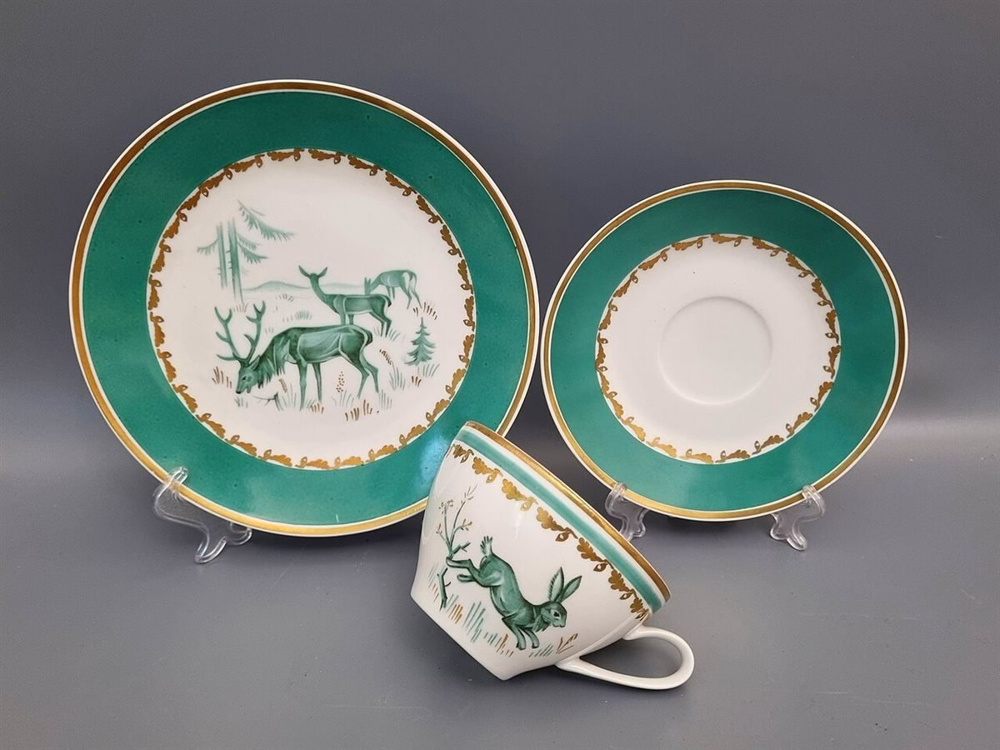

店のこと
店のこと
確認できているのは、所在地・電話番号・Instagramのアカウントです。
「想像してみる」の部分は制作側の想像です。お店の実際の様子・考え・メニューとは関係がありません。
確認できていること
- 店名は「カフェ パティスリー ルリアンルエ」、業種はカフェ・パティスリー
- 所在地は沖縄県島尻郡与那原町与那原380-8(〒901-1303)
- 電話番号は090-9788-2069
- Instagramのアカウントは @lelien.cake
- 営業時間・定休日・メニュー・価格・ご予約・駐車場は準備中

想像してみる
「パティスリー」という言葉から
制作側は、洋菓子の作り手という言葉から、粉や卵、バターといった素材や、小さな焼き菓子を思い浮かべました。ただしこれは言葉からの連想で、お店で何を作っているのかは確認できていません。詳しくはInstagramをご覧ください。